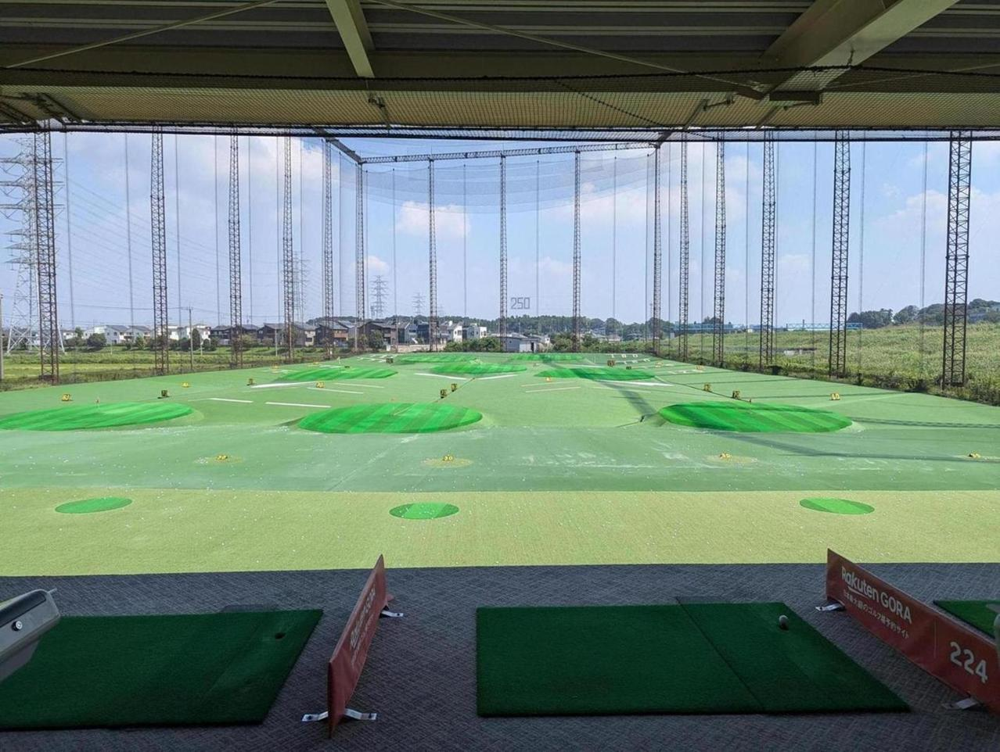
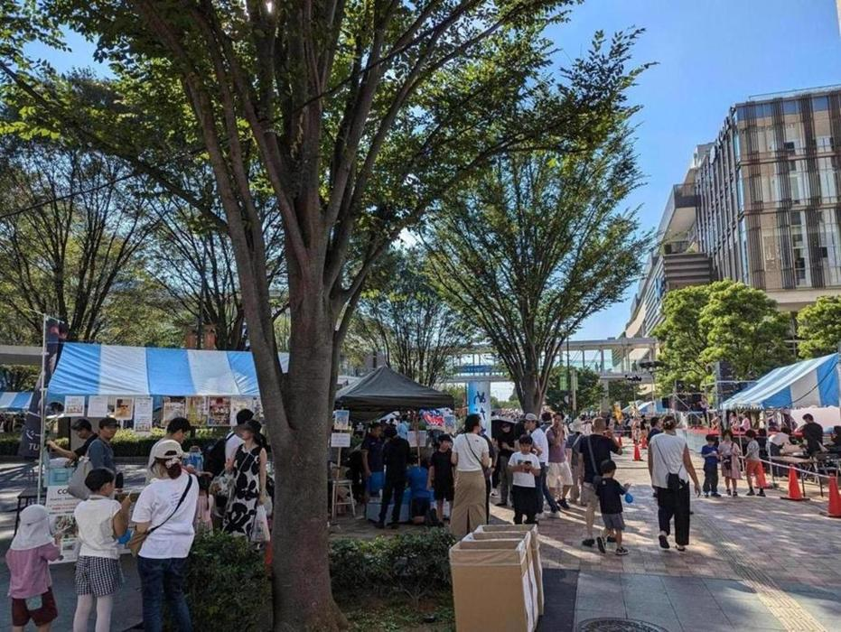
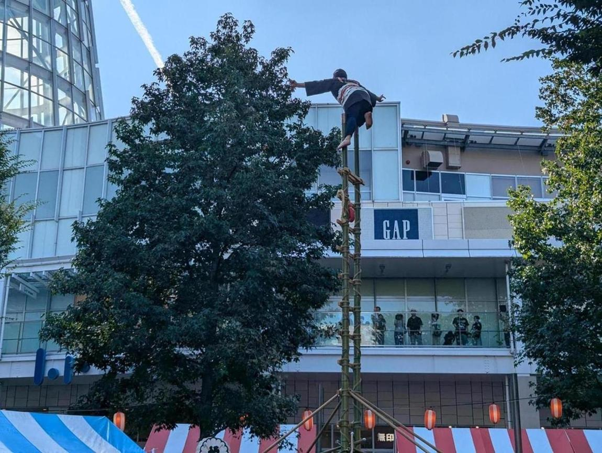

今日もゴルフの練習。素振りしまくった。手が筋肉痛。

近所でお祭りやってたので行ってみた。このお祭りは公園とか神社でなく、ららぽーとの目の前で開催される。ららぽーとは駅のすぐ近くにあるのだが、駅のロータリー部分を封鎖して、そこに出店などを並べて歩行者天国にしていた。駅そばだからアクセスも良いし、疲れたりトイレ行きたくなったらすぐにららぽーとに入れるので、快適性が高かった。

こういうのもやってた。このあとブラスバンドとかサンバとかやってたりして、全体的に盛り上がることを詰め込んでおり、企画力の高い人間の存在をうっすら感じた。